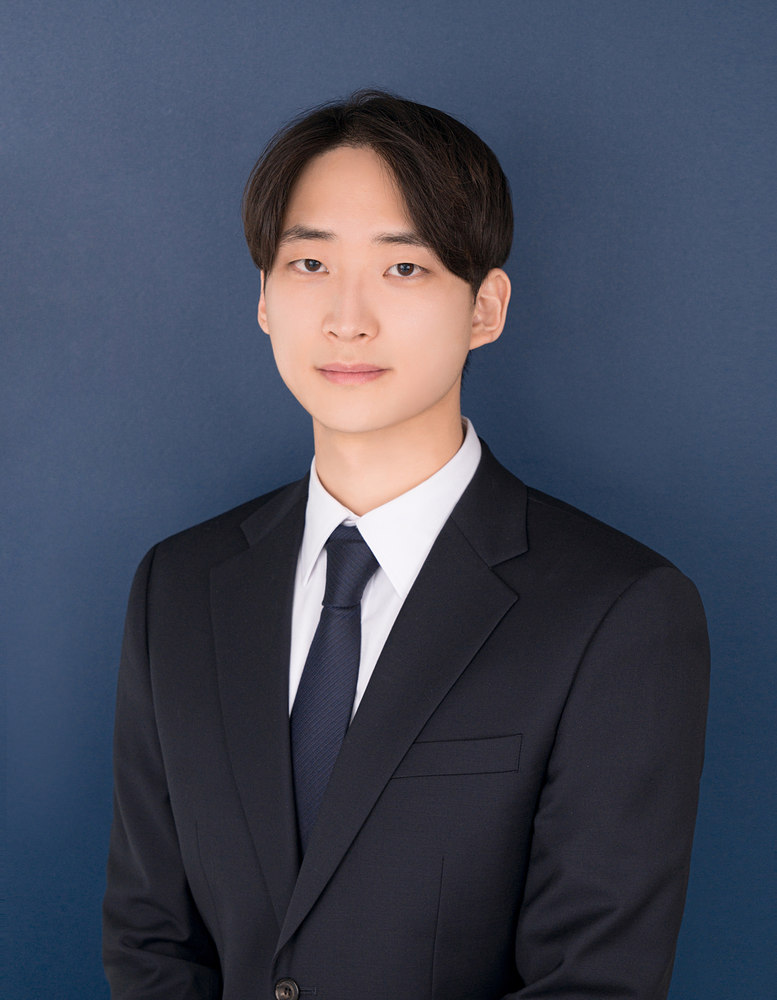

 |
장시영
Product Manager / Service Planner
|
운영과 서비스 기획을 모두 경험하며, 문제를 구조적으로 정의하고 협업 가능한 기준으로 구체화해온 Product Manager입니다.
Product Manager | 2024.04 - Present
Operations | 2023.08 - 2024.04
Operations | 2023.08 - 2024.08
저는 데이터를 기반으로 문제를 정의하고 개선안을 도출해 KPI를 달성하는 기획자가 되고 싶어 지원했습니다. 지금까지 카지노와 포커라는 특정 도메인에서 운영 지표와 사용자 맥락을 바탕으로 의사결정해 왔지만, 사용자층과 사용 맥락이 한정적인 도메인이었던 만큼 앞으로는 B2C와 B2B를 아우르는 다양한 도메인에서 보편적인 사용자 문제를 다루며 정량적인 판단 역량을 향상시키고 싶었습니다.
현대벤디스에 지원한 이유는 식권대장이 직장인의 점심시간이라는 가장 일상적이고 반복적인 맥락을 다루면서도, 기업, 가맹점, 회사원이 동시에 얽히는 구조의 서비스이기 때문입니다. 매일 발생하는 결제, 가맹점 선택, 사용 패턴 데이터가 누적되는 환경이라 사용자 행동을 정량적으로 관찰하고 가설을 검증하며 개선안을 도출하기에 적합하다고 판단했습니다. 또한 식권대장을 시작으로 OO대장 시리즈를 통해 직장인의 시간을 단계적으로 확장해 나가는 방향성 역시, B2B2C 환경에서 다양한 도메인의 사용자 문제를 반복적으로 발견하고 풀어나가는 제 커리어 방향과 잘 맞는다고 느꼈습니다.
저의 강점은 개선이 필요한 부분을 발견하면, 직접 개선사항을 테스트해보고 제안하는 자기주도성입니다. 나트리스는 작은 조직 특성상 빠른 시간 안에 산출물을 만들어내는 것이 중요했지만, 그만큼 많은 산출물이 쌓이면서 문서 정합성과 기획 의도 전달에 문제가 생겼습니다. 저는 이를 협업 구조의 문제로 보고, 흩어져 있던 산출물을 단일 GitHub 프로젝트로 통합해 AI 기반 검증으로 정합성을 자동으로 확인할 수 있는 구조를 만들었고, 화면 설계서는 기획자가 직접 제작한 프로토타입으로 대체해 이해관계자가 같은 결과물을 보고 판단할 수 있도록 했습니다. 단순한 제안에 그치지 않고 직접 파일럿을 통해 결과물을 만들어 보였으며, 제작 문서 작성 기간을 1주일에서 3일로 단축했고, 해당 워크플로우는 조직에 정식 프로세스로 채택되어 운영되고 있습니다.
두 번째 강점은 지표에서 개선 구간을 찾아 개선하는 능력입니다. 앤서스랩코리아에서 영국에서 진행되는 오프라인 본선의 참가자 200명을 온라인 예선을 통해 확보하는 이벤트를 운영했습니다. 예선은 정해진 가치의 본선 참가권을 우승자에게 지급하는 방식인데, 예선마다 발급해야 하는 참가권 수가 참여 인원과 무관하게 최소 보장되어 있어, 참여 인원이 적으면 모인 참가비로 보장 참가권 가치를 충당하지 못해 적자로 이어지는 구조였습니다. 지난 해 데이터를 확인한 결과 특정 참가비 구간과 시간대에서 참여율이 저조해 참가비가 충분히 모이지 않아 적자가 심하게 발생한 패턴을 확인했습니다. 그래서 당해 영국 접속 피크타임을 확인해 운영 스케줄을 전면 재조정하고, 회사 내부 가이드라인 안에서 해당 이벤트에 더 높은 시각적 위계를 부여해 사용자 클릭을 유도했습니다. 그 결과 진출 인원 200명은 그대로 유지하면서 전년 대비 손실 폭을 50% 줄일 수 있었습니다.
나트리스에서 UI 기능 정의 및 가이드라인 정립 프로젝트를 진행해 중복 기능 컴포넌트 제작 0회, UI 관련 QA 티켓 발생 빈도 50% 감소, 디자이너 리뷰 횟수 감소의 성과를 달성했습니다.
당시 공통 UI 컴포넌트의 기능 정의와 사용 기준이 부재해 기획·제작·QA 전 단계에서 판단 기준 없이 작업이 반복되는 문제가 있었습니다. 기획 단계에서는 컴포넌트 기능이 정리되어 있지 않아 불필요한 컴포넌트가 중복 제작됐고, 제작 단계에서는 가이드라인 부재로 화면마다 UX가 일관되지 않았으며, QA 단계에서는 동작 기준이 없어 버그와 스펙의 경계가 모호했습니다.
저는 이를 세 단계를 잇는 단일 레퍼런스의 부재로 보고, 컴포넌트별 props와 동작 조건, 예외 케이스를 스펙으로 명시한 기능 정의 문서를 제작했고, 상황별 UI 선택 기준은 의사결정 트리로 시각화해 실무자가 동일한 기준으로 판단할 수 있도록 만들었습니다. 디자인 시스템은 Figma 에셋과 연결해 문서 안에서 시각 자료로 함께 확인할 수 있도록 구성했습니다.
입사 후에는 식권대장과 백오피스 어드민 툴에 빠르게 적응해 곧바로 기여할 수 있는 기획자가 되겠습니다. 관계형 데이터베이스와 JSON 같은 반정형 데이터에 대한 이해를 바탕으로 식권대장의 데이터 구조를 빠르게 파악하고, 이를 어드민 툴 설계와 신규 기능 기획, 운영 정책 수립 등 실제 기획 업무에 적극적으로 활용해 백오피스 기획의 완성도를 높이는 데 기여하겠습니다.
또한 의사결정의 근거를 더 단단하게 만들기 위해 정량 평가 역량을 꾸준히 보완하겠습니다. 현재까지 정량 분석에 필요한 파이썬과 SQL을 학습했으며, 현재는 통계학의 수학적 이론을 중심으로 공부하고 있습니다. 매일 업무 시작 1시간 30분 전에 출근해 학습 시간을 확보하고 있으며, 입사 후에도 이 습관을 유지하면서 바이브 코딩으로 운영 데이터를 직접 추출하고 가공하여 근거있는 의사결정을 하고싶습니다. 나아가 간단한 범위에서 통계적 가설 수립과 검정을 해보며 학습한 내용을 실제 업무에 적용해 나가겠습니다.
마지막으로, 나트리스에서 AX 워크플로우를 도입했던 경험을 살려 각 파트의 이해관계자들이 겪고있는 문제와 니즈를 정의하고, 개선안을 수립하겠습니다. 각 파트가 일하는 방식을 가까이에서 관찰하고, 반복적으로 발생하는 비효율이나 협업 비용을 AI 도구와 워크플로우 재설계로 풀어낼 수 있는 지점을 찾아 제안하겠습니다. 또한 도입한 개선마다 평가 지표를 사전에 정의하고 도입 이후 지표를 추적해 효과를 정량적으로 검증함으로써, 단순한 제안에 그치지 않고 결과로 입증되는 사내 업무 프로세스 개선에 기여하겠습니다.